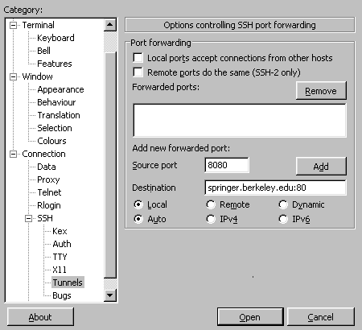

Running R CGI Programs
1 Setting up your Account for CGI Scripting
In order to run CGI scripts on the class webserver, you need to
create two directories within your SCF account. After logging
in to your SCF account, you can create these directories with the
following command:
mkdir -p public_html/cgi-bin
In order to run R CGI scripts, you will need to copy two files into
the newly created cgi-bin directory. You can do this with the following
commands:
cp ~s133/.Rprofile public_html/cgi-bin
cp ~s133/R.cgi public_html/cgi-bin
Once you have created these directories and copied the two
files, you are ready to start writing CGI programs using R. Notice that
you only have to create the directories and copy the files once, not
everytime that you create a CGI program.
First, let's say that you've created an HTML page which will display
a form for a user to enter some input, and you've named it test.html.
Store the program in the public_html directory of your SCF account,
and you can access it through the following URL (from the SCF machines):
http://springer/~s133xx/test.html
Now suppose that you've created an R CGI script that you'd like to test.
(You may want to start with something simple, just to make sure that
everything's working right.) In order for the webserver to find your
program, it must be located in the cgi-bin directory that you created
earlier. The webserver is configured so that it will only run programs
that have a .cgi extension, so make sure your program has such
an extension. Let's say that the program you've placed in your
cgi-bin directory is called test.cgi, and that your
SCF login is s133xx. If you're working
on one of the SCF machines, you would type the following address into your
browser:
http://springer/~s133xx/cgi-bin/R.cgi/test.cgi
If you're using a computer on another network (like your own computer at
home, or any other campus machine, including ones connected through
AirBears), you'll need to set up an SSH tunnel to access the webserver.
On Windows systems, you can
use the SSH software that you downloaded from software.berkeley.edu to
set up the tunnel;
on Unix/Linux or Mac OSX you can use the command line.
To set up an SSH tunnel using putty,
open the program,
click on the plus sign to the left of SSH in the left-hand pane,
and click on Tunnels, which will appear under the SSH section.
Fill in the fields as shown in this screenshot:

After hitting "Add", make sure that "L8080" appears
in the window listing the forwarded port.
If you're using a computer that has a command-line version of the ssh
program, you can create the tunnel with the command:
ssh -N -L 8080:springer.berkeley.edu:80 s133xx@anyscfhost
Where anyscfhost is the name (including the .berkeley.edu
at the end) of any SCF host, and s133xx is your SCF login.
The ssh program will prompt you for
a password; once you type it in and hit Enter, you can put the ssh job
in the background using control-Z, followed by typing "bg",
or you can just leave it running it the terminal.
Once the tunnel is set up, you can access your program at:
http://localhost:8080/~s133xx/cgi-bin/R.cgi/test.cgi
File translated from
TEX
by
TTH,
version 3.67.
On 15 Apr 2009, 16:05.